Overview
Understanding how functional regression models make predictions is crucial for building trust and ensuring reliable deployments. The fdars explainability toolkit provides 22 methods organized into four categories.
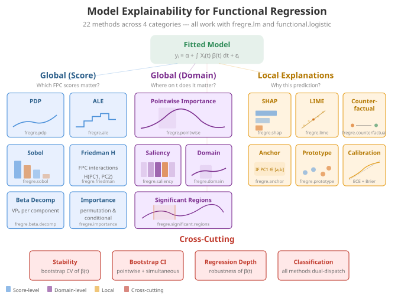
Supported Models
Two model types are supported. Most methods work with both; a few are specific to one:
| Model | Class | Response | Fitted by |
|---|---|---|---|
| Linear | fregre.lm |
Continuous | fregre.lm() |
| Logistic | fregre.logistic |
Binary | functional.logistic() |
Both models project curves onto FPC scores and regress on them. The
same R functions (e.g. fregre.pdp) automatically dispatch
to the correct Rust backend based on the model class.
Method Reference
| Method | Function | Models | Category |
|---|---|---|---|
| Partial Dependence (PDP) | fregre.pdp |
lm, logistic | Global (Score) |
| Accumulated Local Effects | fregre.ale |
lm, logistic | Global (Score) |
| Sobol Sensitivity | fregre.sobol |
lm, logistic | Global (Score) |
| Friedman H-statistic | fregre.friedman |
lm, logistic | Global (Score) |
| Beta Decomposition | fregre.beta.decomp |
lm, logistic | Global (Score) |
| Pointwise Importance | fregre.pointwise |
lm, logistic | Global (Domain) |
| Saliency Maps | fregre.saliency |
lm, logistic | Global (Domain) |
| Domain Importance | fregre.domain |
lm, logistic | Global (Domain) |
| Significant Regions | fregre.significant.regions |
lm, logistic | Global (Domain) |
| SHAP Values | fregre.shap |
lm, logistic | Local |
| LIME | fregre.lime |
lm, logistic | Local |
| Counterfactual | fregre.counterfactual |
lm, logistic | Local |
| Anchor | fregre.anchor |
lm, logistic | Local |
| Prototypes | fregre.prototype |
lm, logistic | Local |
| Permutation Importance | fregre.importance |
lm, logistic | Diagnostics |
| VIF | fregre.vif |
lm, logistic | Diagnostics |
| Regression Depth | fregre.depth |
lm, logistic | Diagnostics |
| Conditional Importance | fregre.conditional.importance |
lm, logistic | Diagnostics |
| Influence (Leverage, Cook’s D) | fregre.influence |
lm only | Diagnostics |
| DFBETAS / DFFITS | fregre.dfbetas |
lm only | Diagnostics |
| Calibration / ECE |
fregre.calibration,
fregre.ece
|
logistic only | Diagnostics |
| Explanation Stability | fregre.stability |
model-free | Diagnostics |
Setup
Simulated Data
We create a dataset where the response depends on specific regions of the functional domain. In applied terms, imagine spectroscopy curves where only certain wavelengths predict a chemical concentration — the goal of explainability is to recover which wavelengths matter.
n <- 80
m <- 100
t_grid <- seq(0, 1, length.out = m)
# True coefficient function: peaked around t=0.3 and t=0.7
beta_true <- 2 * dnorm(t_grid, 0.3, 0.08) - 1.5 * dnorm(t_grid, 0.7, 0.08)
beta_true <- beta_true / max(abs(beta_true))
# Generate functional predictors
X <- matrix(0, n, m)
for (i in 1:n) {
X[i, ] <- sin(2 * pi * t_grid) + 0.5 * rnorm(1) * cos(4 * pi * t_grid) +
rnorm(m, sd = 0.1)
}
# Generate response: y_i = integral of beta(t) * X_i(t) dt + noise
dt <- t_grid[2] - t_grid[1]
y <- numeric(n)
for (i in 1:n) {
y[i] <- sum(beta_true * X[i, ]) * dt + rnorm(1, sd = 0.3)
}
fdataobj <- fdata(X, argvals = t_grid)
df_beta <- data.frame(t = t_grid, beta = beta_true)
ggplot(df_beta, aes(x = t, y = beta)) +
geom_line(color = "#2E8B57", linewidth = 1.5) +
geom_hline(yintercept = 0, linetype = "dashed", alpha = 0.3) +
geom_ribbon(aes(ymin = 0, ymax = beta), fill = "#2E8B57", alpha = 0.15) +
annotate("text", x = 0.3, y = max(beta_true) * 1.1, label = "Important\nregion",
color = "#2E8B57", size = 3) +
annotate("text", x = 0.7, y = min(beta_true) * 1.1, label = "Important\nregion",
color = "#D55E00", size = 3) +
labs(title = expression("True Coefficient Function " * beta(t)),
subtitle = "Positive peak at t=0.3, negative peak at t=0.7",
x = "t", y = expression(beta(t)))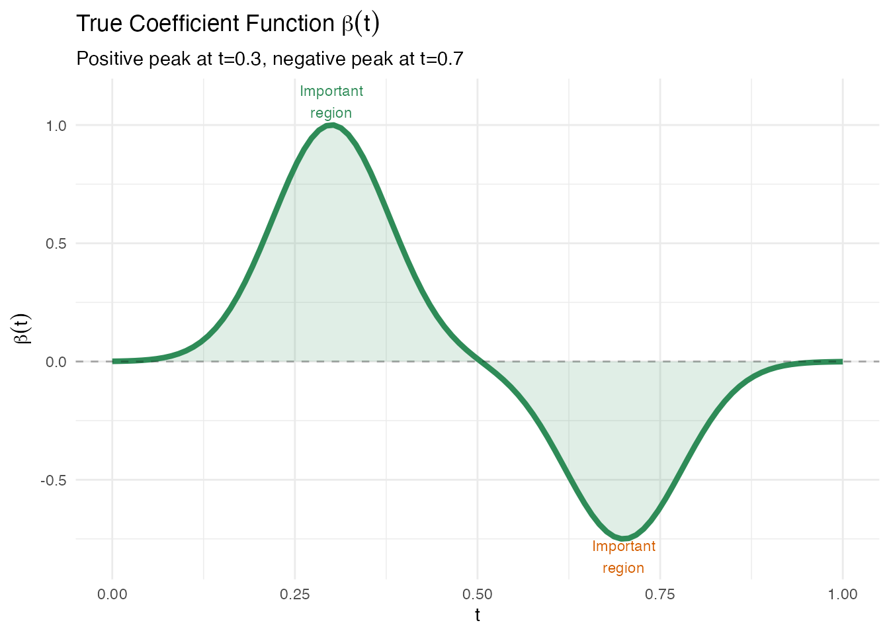
Fitting a Linear Model
The functional linear model represents the scalar response as
In practice, fregre.lm() projects each curve onto
functional principal components (FPCs) and fits OLS on the resulting
scores:
This is the model that all explainability methods operate on.
model <- fregre.lm(fdataobj, y, ncomp = 5)
cat("R\u00b2:", round(model$r.squared, 4), "\n")
#> R²: 0.0607
cat("RMSE:", round(sqrt(mean(model$residuals^2)), 4), "\n")
#> RMSE: 0.2928
df_fit <- data.frame(Observed = y, Fitted = model$fitted.values)
ggplot(df_fit, aes(x = Observed, y = Fitted)) +
geom_point(color = "#4A90D9", size = 2, alpha = 0.7) +
geom_abline(slope = 1, intercept = 0, linetype = "dashed", color = "gray50") +
labs(title = "Observed vs Fitted Values",
subtitle = paste("R\u00b2 =", round(model$r.squared, 3)),
x = "Observed y", y = "Fitted y")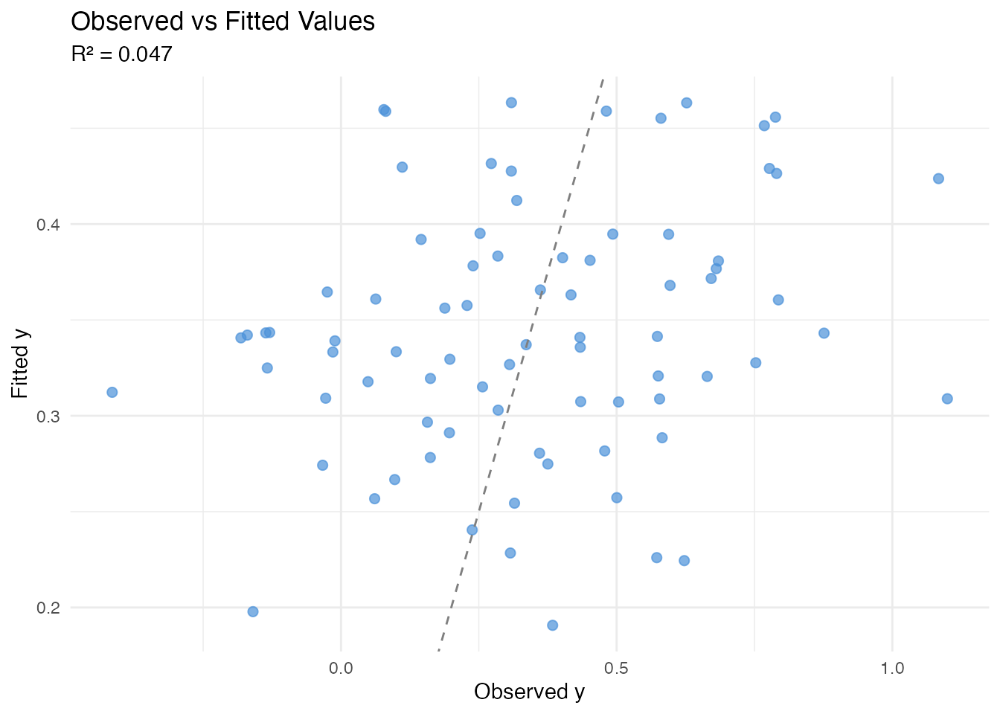
Global Explanations: Score-Level
These methods answer: which FPC scores drive predictions? They operate on the multivariate regression and reveal how changing each score affects the predicted response.
All methods in this section support both fregre.lm
and functional.logistic.
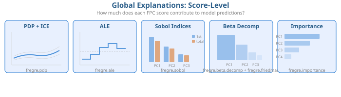
Partial Dependence Plots (PDP)
In plain English: A PDP shows how the model’s prediction changes as one FPC score varies, averaging over all other scores. Think of it as: “if we could separately control just PC1, what would happen to the prediction?”
Mathematically: The partial dependence function for the -th score is
For each value of , we plug it into every observation’s score vector (keeping all other scores at their actual values) and average the predictions. A flat PDP means the score has no effect; a steep slope means it matters.
Limitation: When FPC scores are correlated, PDP evaluates the model at unrealistic score combinations (e.g. high PC1 with low PC2 even if they always co-occur). See ALE below for a correction.
pdp1 <- fregre.pdp(model, data = fdataobj, component = 1, n.grid = 30)
pdp2 <- fregre.pdp(model, data = fdataobj, component = 2, n.grid = 30)
df_pdp <- rbind(
data.frame(x = pdp1$grid_values, y = pdp1$pdp_curve, Component = "PC1"),
data.frame(x = pdp2$grid_values, y = pdp2$pdp_curve, Component = "PC2")
)
ggplot(df_pdp, aes(x = x, y = y)) +
geom_line(color = "#4A90D9", linewidth = 1) +
facet_wrap(~ Component, scales = "free_x") +
labs(title = "Partial Dependence Plots",
subtitle = "Marginal effect of each PC on prediction",
x = "PC Score", y = "Partial Dependence")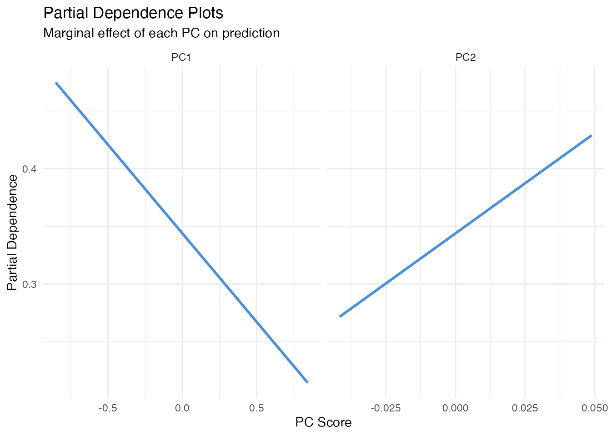
Accumulated Local Effects (ALE)
In plain English: ALE fixes PDP’s correlation problem. Instead of substituting scores globally, it looks at how predictions change locally within narrow bins of the score distribution. This avoids extrapolating into unrealistic score combinations.
Mathematically: The ALE for score accumulates local differences:
where is the set of observations in bin , and , are the bin’s upper and lower bounds. The result is centred so .
When to prefer ALE over PDP: Always, unless FPC
scores are (nearly) uncorrelated — which they are by construction in
FPCA. So for fregre.lm, PDP and ALE will typically agree
closely. They may diverge for logistic models or when scalar covariates
are correlated with FPC scores.
ale1 <- fregre.ale(model, data = fdataobj, component = 1, n.bins = 15)
df_ale <- data.frame(x = ale1$bin_midpoints, y = ale1$ale_values)
ggplot(df_ale, aes(x = x, y = y)) +
geom_step(color = "#4A90D9", linewidth = 1) +
geom_hline(yintercept = 0, linetype = "dashed", alpha = 0.3) +
labs(title = "ALE Plot for PC1",
subtitle = "Accumulated Local Effects (robust to score correlations)",
x = "PC1 Score", y = "ALE")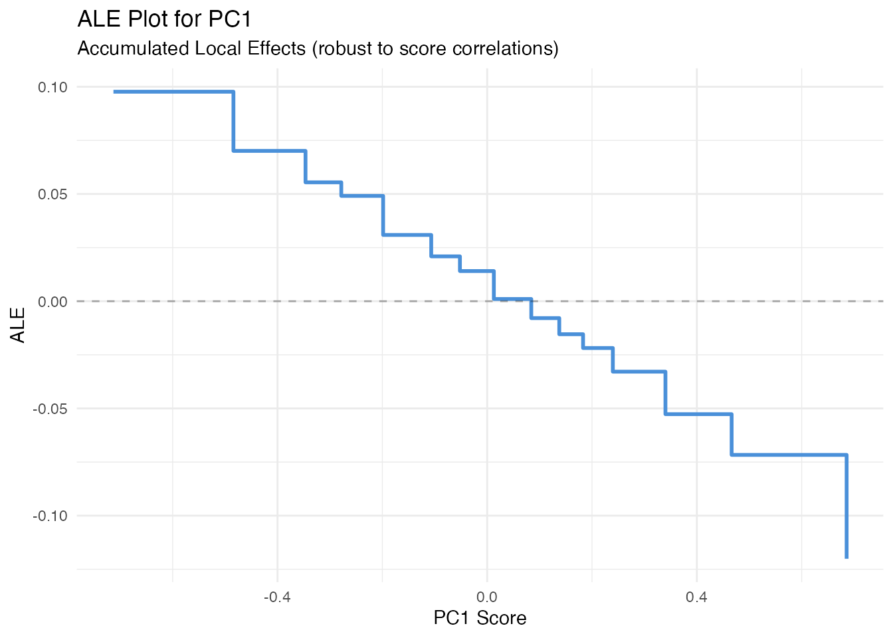
Sobol Sensitivity Indices
In plain English: Sobol indices answer “what fraction of the variation in predictions is due to each FPC score?” First-order indices measure the direct effect of each score alone; total-order indices add all interactions involving that score. If first-order and total-order are nearly equal, the score acts independently.
Mathematically: The first-order index for score is
and the total-order index is
Both are estimated via Monte Carlo sampling. First-order indices sum to 1 when there are no interactions; total-order indices can sum to more than 1.
sob <- fregre.sobol(model, data = fdataobj, y = y)
df_sobol <- data.frame(
Component = paste0("PC", seq_along(sob$first_order)),
First = sob$first_order,
Total = sob$total_order
)
df_sobol_long <- rbind(
data.frame(Component = df_sobol$Component, Value = df_sobol$First, Index = "First-order"),
data.frame(Component = df_sobol$Component, Value = df_sobol$Total, Index = "Total-order")
)
ggplot(df_sobol_long, aes(x = Component, y = Value, fill = Index)) +
geom_col(position = "dodge", alpha = 0.7) +
scale_fill_manual(values = c("First-order" = "#4A90D9", "Total-order" = "#D55E00")) +
labs(title = "Sobol Sensitivity Indices",
subtitle = "First-order vs total-order variance decomposition",
x = "Component", y = "Index") +
theme(legend.position = "bottom")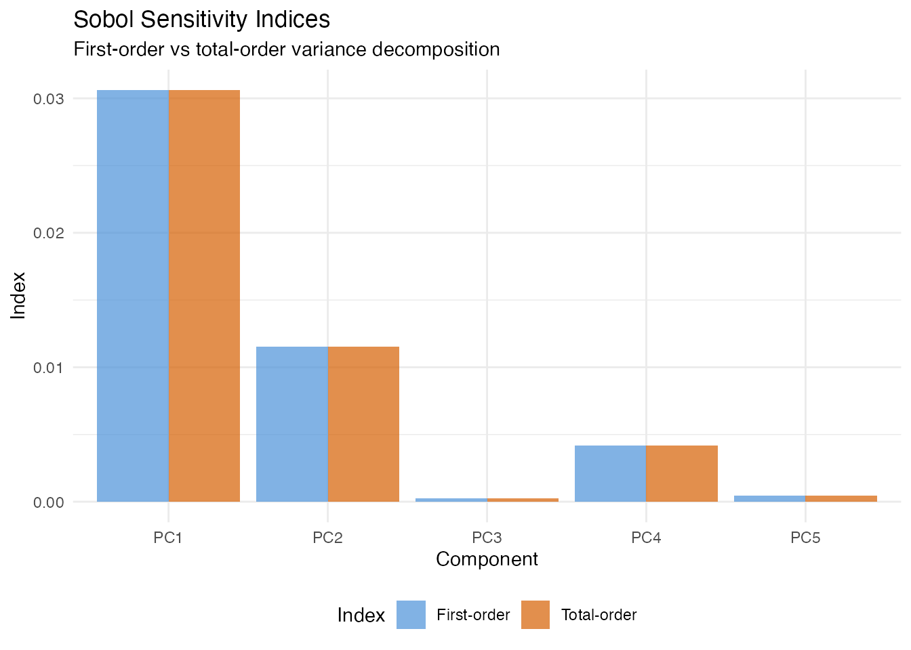
Friedman H-Statistic
In plain English: The H-statistic tells you whether two FPC scores interact — that is, whether the effect of one score depends on the value of the other. A value near 0 means the scores affect the prediction independently; a large value means their combined effect is more (or less) than the sum of parts.
Mathematically: For scores and , the H-statistic is
where is the two-dimensional PDP and , are the marginal PDPs. For a purely linear model (no interactions), exactly.
fried <- fregre.friedman(model, data = fdataobj, component.j = 1,
component.k = 2, n.grid = 15)
cat("H-statistic (PC1 x PC2):", round(fried$h_squared, 4), "\n")
#> H-statistic (PC1 x PC2): 0Beta Decomposition
In plain English: Since the model predicts using , we can ask “how much of the variation in predictions comes from each component?” Beta decomposition answers this by weighting each coefficient by the variance of its score.
Mathematically: The variance proportion for component is
This is the simplest global importance measure — it uses only the model coefficients and score variances, with no Monte Carlo sampling.
decomp <- fregre.beta.decomp(model)
df_decomp <- data.frame(
Component = paste0("PC", 1:length(decomp$variance_proportion)),
Weight = decomp$variance_proportion
)
df_decomp$Component <- factor(df_decomp$Component,
levels = df_decomp$Component[order(-df_decomp$Weight)])
ggplot(df_decomp, aes(x = Component, y = Weight)) +
geom_col(fill = "#4A90D9", alpha = 0.7) +
labs(title = "Beta Decomposition: Variance Proportion",
subtitle = "Fraction of prediction variance attributable to each PC",
x = "Component", y = "Variance Proportion")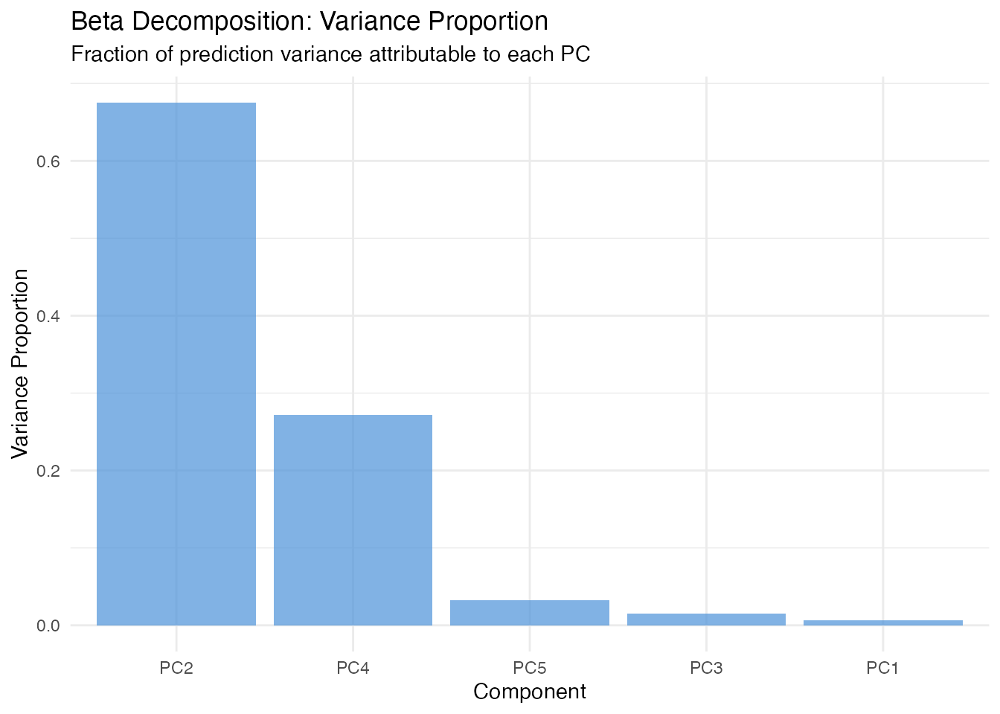
Global Explanations: Domain-Level
These methods answer: where on the functional domain does the model focus? While score-level methods operate on FPC scores (multivariate), these methods translate importance back to the original curve domain — telling you which time points, wavelengths, or spatial locations matter.
All methods in this section support both fregre.lm
and functional.logistic.
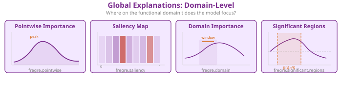
Pointwise Importance
In plain English: For each point on the domain, this method combines how much each eigenfunction contributes at that point with how important the corresponding score is to the prediction. The result is a curve showing which parts of the domain the model “pays attention to”.
Mathematically: The pointwise importance at is
High values indicate regions where (a) the eigenfunctions are large and (b) the regression coefficients are large. Compare the result to the true — the peaks should align.
pw <- fregre.pointwise(model)
df_pw <- data.frame(t = t_grid, importance = pw$importance)
ggplot(df_pw, aes(x = t, y = importance)) +
geom_line(color = "#7B2D8E", linewidth = 1) +
geom_ribbon(aes(ymin = 0, ymax = importance), fill = "#7B2D8E", alpha = 0.15) +
labs(title = "Pointwise Importance",
subtitle = "Which domain points drive predictions most?",
x = "t", y = "Importance")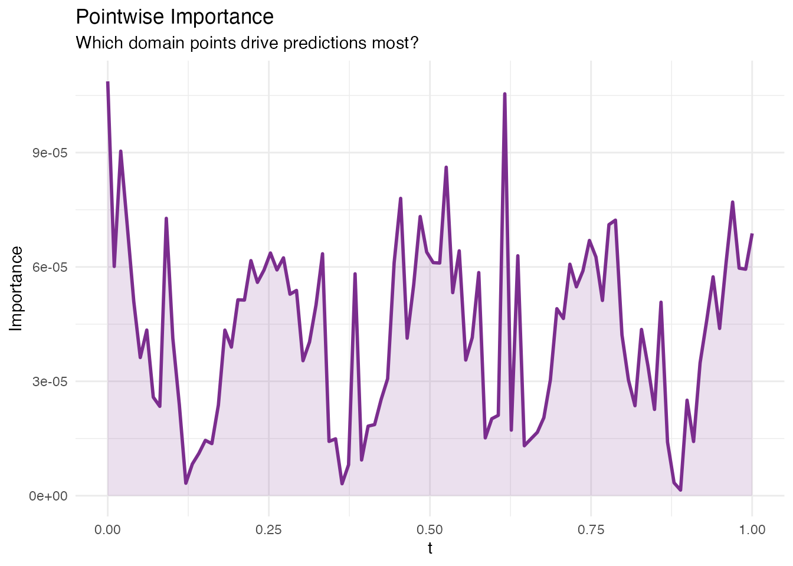
Saliency Maps
In plain English: Saliency maps show how sensitive the prediction is to small perturbations of the curve at each point . If wiggling the curve at changes the prediction a lot, that point has high saliency. This is the functional analogue of gradient-based saliency in image classification.
Mathematically: For each observation , the saliency at is
In the linear model this equals
for every observation. fregre.saliency() returns the mean
absolute saliency across all observations, which highlights where the
model is most sensitive.
sal <- fregre.saliency(model, data = fdataobj)
df_sal <- data.frame(t = t_grid, saliency = sal$mean_absolute_saliency)
ggplot(df_sal, aes(x = t, y = saliency)) +
geom_line(color = "#C0392B", linewidth = 1) +
geom_ribbon(aes(ymin = 0, ymax = saliency), fill = "#C0392B", alpha = 0.15) +
labs(title = "Mean Absolute Saliency Map",
subtitle = "Gradient-based sensitivity across the domain",
x = "t", y = "|Saliency|")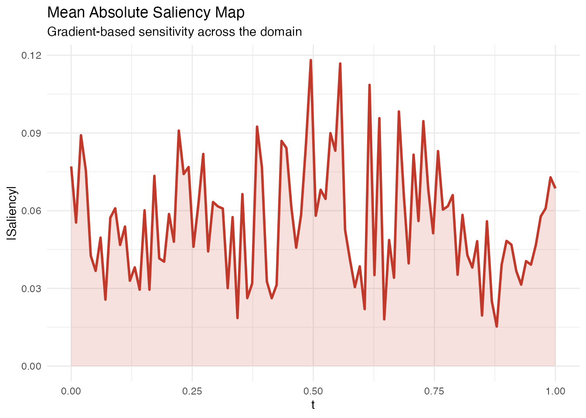
Domain Importance
In plain English: Instead of looking at individual points, domain importance uses a sliding window along to assess which regions matter. This is useful when the effect is spread over a neighbourhood rather than concentrated at a single point.
Mathematically: The domain importance at grid point aggregates the absolute coefficient function within a window of width :
Larger window.width values produce smoother importance
curves.
Methodological limitation. Domain importance uses as pointwise importance. In FPC-based regression, the estimated is smooth and spread out – signal from localized regions gets diffused across the FPC reconstruction. The default
threshold = 0.1(10% of total importance in one window) can be too aggressive for diffuse betas. Lowering the threshold helps, but the method is fundamentally limited for detecting sharp, localized regions when the basis functions are nonlocal. See the Explainability Regions example for a detailed validation.
dom <- fregre.domain(model, window.width = 5)
df_dom <- data.frame(t = t_grid, importance = dom$pointwise_importance)
ggplot(df_dom, aes(x = t, y = importance)) +
geom_line(color = "#2E8B57", linewidth = 1) +
geom_ribbon(aes(ymin = 0, ymax = importance), fill = "#2E8B57", alpha = 0.15) +
labs(title = "Domain Importance (Sliding Window)",
subtitle = paste("Window width:", dom$window_width),
x = "t", y = "Importance")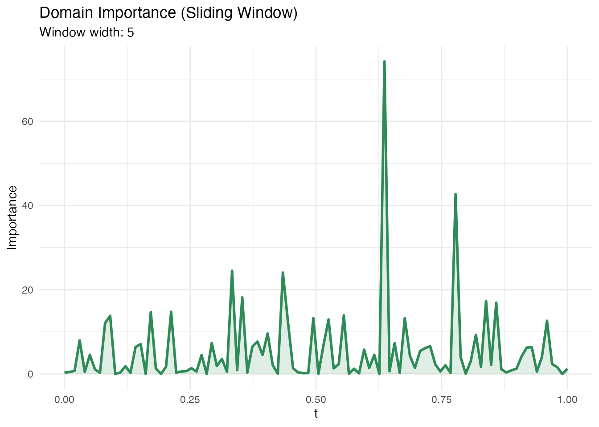
Significant Regions
In plain English: This method identifies contiguous intervals of where the coefficient is statistically different from zero. Unlike pointwise importance (which gives a continuous importance score), this gives a binary answer: significant or not. Use this when you need formal inference about which domain regions matter.
Mathematically: At each , a pointwise test is performed using the standard error of . Contiguous intervals exceeding the significance threshold at level are reported.
sig <- fregre.significant.regions(model, alpha = 0.05)
if (is.null(sig) || length(sig$start_idx) == 0) {
cat("No significant regions detected at alpha = 0.05.\n")
cat("This can happen when the signal is spread across many FPCs or\n")
cat("when pointwise tests lack power. Try bootstrap CI instead.\n")
} else {
cat("Significant regions found:", length(sig$start_idx), "\n")
for (i in seq_along(sig$start_idx)) {
cat(sprintf(" Region %d: t = [%.3f, %.3f] (%s)\n",
i, t_grid[sig$start_idx[i]], t_grid[sig$end_idx[i]],
sig$direction[i]))
}
}
#> Significant regions found: 56
#> Region 2: t = [0.000, 0.000] (positive)
#> Region 3: t = [0.010, 0.010] (negative)
#> Region 4: t = [0.020, 0.020] (positive)
#> Region 5: t = [0.030, 0.061] (negative)
#> Region 6: t = [0.071, 0.081] (positive)
#> Region 7: t = [0.101, 0.101] (negative)
#> Region 8: t = [0.111, 0.131] (positive)
#> Region 9: t = [0.141, 0.141] (negative)
#> Region 10: t = [0.152, 0.152] (positive)
#> Region 11: t = [0.162, 0.192] (negative)
#> Region 12: t = [0.202, 0.202] (positive)
#> Region 13: t = [0.212, 0.212] (negative)
#> Region 14: t = [0.222, 0.222] (positive)
#> Region 15: t = [0.232, 0.232] (negative)
#> Region 16: t = [0.242, 0.273] (positive)
#> Region 17: t = [0.283, 0.303] (negative)
#> Region 18: t = [0.313, 0.343] (positive)
#> Region 19: t = [0.354, 0.364] (negative)
#> Region 20: t = [0.374, 0.384] (positive)
#> Region 21: t = [0.394, 0.404] (negative)
#> Region 22: t = [0.414, 0.434] (positive)
#> Region 23: t = [0.444, 0.475] (negative)
#> Region 24: t = [0.485, 0.495] (positive)
#> Region 25: t = [0.505, 0.525] (negative)
#> Region 26: t = [0.535, 0.545] (positive)
#> Region 27: t = [0.556, 0.556] (negative)
#> Region 28: t = [0.566, 0.596] (positive)
#> Region 29: t = [0.606, 0.606] (negative)
#> Region 30: t = [0.626, 0.626] (positive)
#> Region 31: t = [0.636, 0.646] (negative)
#> Region 32: t = [0.657, 0.657] (positive)
#> Region 33: t = [0.667, 0.677] (negative)
#> Region 34: t = [0.687, 0.687] (positive)
#> Region 35: t = [0.697, 0.697] (negative)
#> Region 36: t = [0.707, 0.707] (positive)
#> Region 37: t = [0.717, 0.717] (negative)
#> Region 38: t = [0.727, 0.727] (positive)
#> Region 39: t = [0.737, 0.758] (negative)
#> Region 40: t = [0.768, 0.768] (positive)
#> Region 41: t = [0.778, 0.778] (negative)
#> Region 42: t = [0.788, 0.788] (positive)
#> Region 43: t = [0.798, 0.798] (negative)
#> Region 44: t = [0.808, 0.808] (positive)
#> Region 45: t = [0.818, 0.818] (negative)
#> Region 46: t = [0.828, 0.838] (positive)
#> Region 47: t = [0.848, 0.848] (negative)
#> Region 48: t = [0.859, 0.859] (positive)
#> Region 49: t = [0.869, 0.869] (negative)
#> Region 50: t = [0.879, 0.879] (positive)
#> Region 51: t = [0.889, 0.889] (negative)
#> Region 52: t = [0.899, 0.899] (positive)
#> Region 53: t = [0.909, 0.919] (negative)
#> Region 54: t = [0.929, 0.929] (positive)
#> Region 55: t = [0.939, 0.970] (negative)
#> Region 56: t = [0.990, 0.990] (positive)Local Explanations
These methods answer: why did the model make this specific prediction? Each method explains a single observation’s prediction, which is essential when you need to justify individual decisions (e.g. medical diagnostics, process control).
All methods in this section support both fregre.lm
and functional.logistic.
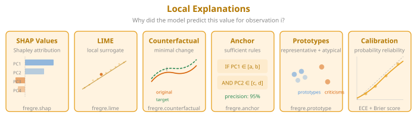
SHAP Values
In plain English: SHAP assigns each FPC score a “contribution” to a specific prediction. If observation has a high predicted value, SHAP tells you which scores pushed the prediction up and which pulled it down. The contributions always add up exactly to the difference between the prediction and the average prediction — nothing is missing.
Mathematically: SHAP values are the unique Shapley values from cooperative game theory. For observation and score :
Each averages the marginal contribution of score across all possible orderings of scores (hence: fair, additive, exact).
The beeswarm plot below shows every observation as a dot, coloured by its feature value. This reveals whether high values of a score push predictions up (dots on the right) or down (dots on the left).
shap <- fregre.shap(model, data = fdataobj)
obs_idx <- 1
ncomp <- ncol(shap$values)
df_shap <- data.frame(
Component = paste0("PC", 1:ncomp),
SHAP = shap$values[obs_idx, ]
)
df_shap$Direction <- ifelse(df_shap$SHAP > 0, "Positive", "Negative")
df_shap$Component <- factor(df_shap$Component,
levels = df_shap$Component[order(abs(df_shap$SHAP))])
ggplot(df_shap, aes(x = Component, y = SHAP, fill = Direction)) +
geom_col(alpha = 0.7) +
scale_fill_manual(values = c("Positive" = "#4A90D9", "Negative" = "#D55E00")) +
coord_flip() +
labs(title = paste("SHAP Values for Observation", obs_idx),
subtitle = paste("Predicted:", round(model$fitted.values[obs_idx], 3),
"| Observed:", round(y[obs_idx], 3)),
x = NULL, y = "SHAP Value") +
theme(legend.position = "bottom")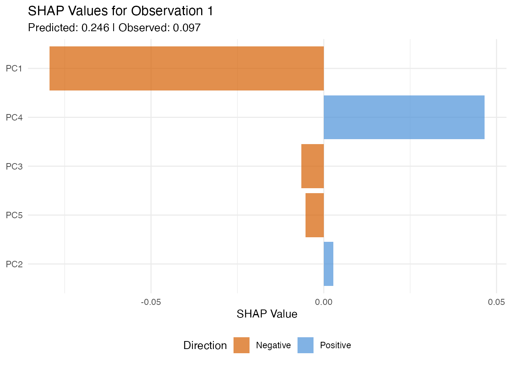
df_shap_all <- data.frame(
Component = rep(paste0("PC", 1:ncomp), each = n),
SHAP = as.vector(shap$values),
Feature_Value = as.vector(model$.fpca_scores[, 1:ncomp])
)
ggplot(df_shap_all, aes(x = SHAP, y = Component, color = Feature_Value)) +
geom_jitter(width = 0, height = 0.2, size = 1.5, alpha = 0.6) +
scale_color_gradient2(low = "#4A90D9", mid = "gray90", high = "#D55E00",
midpoint = 0) +
geom_vline(xintercept = 0, linetype = "dashed", alpha = 0.3) +
labs(title = "SHAP Summary Plot",
subtitle = "Each point = one observation's attribution for that component",
x = "SHAP Value", y = NULL, color = "Feature\nValue")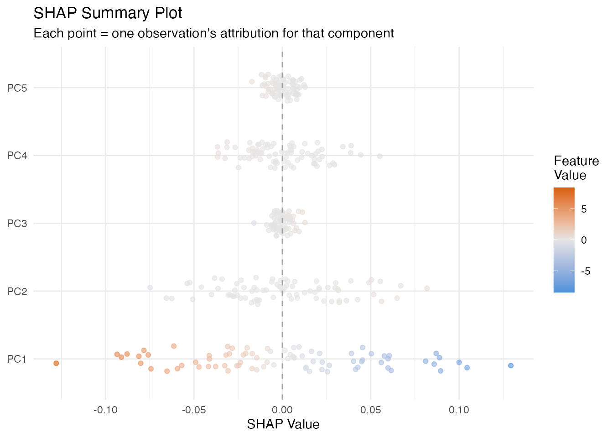
LIME
In plain English: LIME explains one prediction by fitting a simple linear model in the neighbourhood of that observation. It perturbs the FPC scores slightly, observes how the prediction changes, and fits a weighted linear model. The coefficients of this local model tell you which scores matter for this particular observation.
Mathematically: LIME minimises
where is a simple (e.g. linear) surrogate, are perturbed score vectors, and weights by distance from the target observation.
The local indicates how well the linear surrogate approximates the model in this neighbourhood. Low means the model has local nonlinearities.
lime_res <- fregre.lime(model, data = fdataobj, observation = 1,
n.samples = 300, kernel.width = 1, seed = 42)
ncomp_lime <- length(lime_res$attributions)
df_lime <- data.frame(
Component = paste0("PC", seq_len(ncomp_lime)),
Attribution = lime_res$attributions
)
df_lime$Direction <- ifelse(df_lime$Attribution > 0, "Positive", "Negative")
ggplot(df_lime, aes(x = reorder(Component, abs(Attribution)), y = Attribution,
fill = Direction)) +
geom_col(alpha = 0.7) +
scale_fill_manual(values = c("Positive" = "#4A90D9", "Negative" = "#D55E00")) +
coord_flip() +
labs(title = paste("LIME Explanation (Obs 1, local R\u00b2 =",
round(lime_res$local_r_squared, 3), ")"),
x = NULL, y = "Local Attribution") +
theme(legend.position = "none")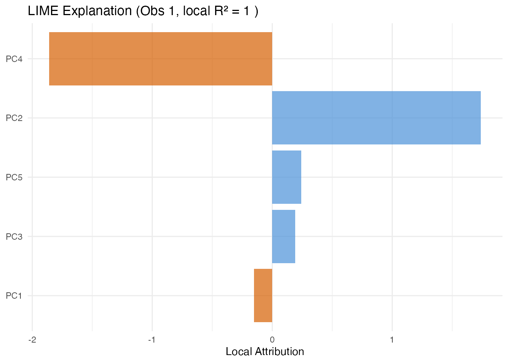
Counterfactual Explanations
In plain English: A counterfactual answers “what is the smallest change to this observation’s scores that would make the model predict a target value?” This is useful for actionable feedback — e.g. “if PC1 were 0.5 units higher, the predicted quality score would cross the acceptance threshold.”
Mathematically: The counterfactual finds
The distance indicates how far the observation is from the target in score space.
target_val <- mean(y) + sd(y)
cf <- fregre.counterfactual(model, data = fdataobj, observation = 1,
target.value = target_val)
cat("Original prediction:", round(cf$original_prediction, 3), "\n")
#> Original prediction: 0.28
cat("Counterfactual prediction:", round(cf$counterfactual_prediction, 3), "\n")
#> Counterfactual prediction: 0.648
cat("Score distance:", round(cf$distance, 3), "\n")
#> Score distance: 0.143Anchor Explanations
In plain English: An anchor is a set of sufficient conditions on the FPC scores such that any observation meeting those conditions receives a similar prediction. Think of it as an if-then rule: “IF PC1 is between 2.1 and 3.4 AND PC3 is between -1.0 and 0.5, THEN the prediction is approximately the same, with 95% precision.”
Mathematically: An anchor satisfies
where is the precision threshold and denotes that satisfies the anchor conditions.
Coverage is the fraction of observations satisfying the anchor. Narrow anchors have high precision but low coverage; broader anchors are more general but less precise.
anch <- fregre.anchor(model, data = fdataobj, observation = 1,
precision = 0.90, n.bins = 5)
cat("Anchor precision:", round(anch$precision, 3), "\n")
#> Anchor precision: 1
cat("Coverage:", round(anch$coverage, 3), "\n")
#> Coverage: 0.2
cat("Matching observations:", anch$n_matching, "\n")
#> Matching observations: 16
if (length(anch$condition_components) > 0) {
cat("Conditions:\n")
for (i in seq_along(anch$condition_components)) {
cat(sprintf(" PC%d in [%.3f, %.3f]\n",
anch$condition_components[i],
anch$condition_lower[i], anch$condition_upper[i]))
}
}
#> Conditions:
#> PC0 in [0.273, Inf]Prototypes and Criticisms
In plain English: Prototypes are the most representative observations — the “typical” curves in each part of score space. Criticisms are the opposite: observations that are poorly represented by the prototypes. Together, they give you a small set of example curves that summarise the entire dataset.
Mathematically: Prototypes and criticisms are selected using the Maximum Mean Discrepancy (MMD) witness function. Prototypes minimise the MMD between the selected subset and the full dataset; criticisms are points where the witness function is maximally negative (underrepresented).
proto <- fregre.prototype(model, ncomp = model$ncomp,
n.prototypes = 3, n.criticisms = 3)
cat("Prototype indices:", paste(proto$prototype_indices, collapse = ", "), "\n")
#> Prototype indices: 35, 30, 69
cat("Criticism indices:", paste(proto$criticism_indices, collapse = ", "), "\n")
#> Criticism indices: 72, 10, 68
proto_curves <- fdataobj$data[proto$prototype_indices, , drop = FALSE]
crit_curves <- fdataobj$data[proto$criticism_indices, , drop = FALSE]
df_proto <- do.call(rbind, lapply(seq_len(nrow(proto_curves)), function(i) {
data.frame(t = t_grid, y = proto_curves[i, ],
type = "Prototype", id = paste("P", proto$prototype_indices[i]))
}))
df_crit <- do.call(rbind, lapply(seq_len(nrow(crit_curves)), function(i) {
data.frame(t = t_grid, y = crit_curves[i, ],
type = "Criticism", id = paste("C", proto$criticism_indices[i]))
}))
df_pc <- rbind(df_proto, df_crit)
ggplot(df_pc, aes(x = t, y = y, color = type, group = id)) +
geom_line(linewidth = 0.8, alpha = 0.8) +
scale_color_manual(values = c("Prototype" = "#4A90D9", "Criticism" = "#D55E00")) +
labs(title = "Prototypes and Criticisms",
subtitle = "Representative vs atypical curves",
x = "t", y = "X(t)", color = NULL) +
theme(legend.position = "bottom")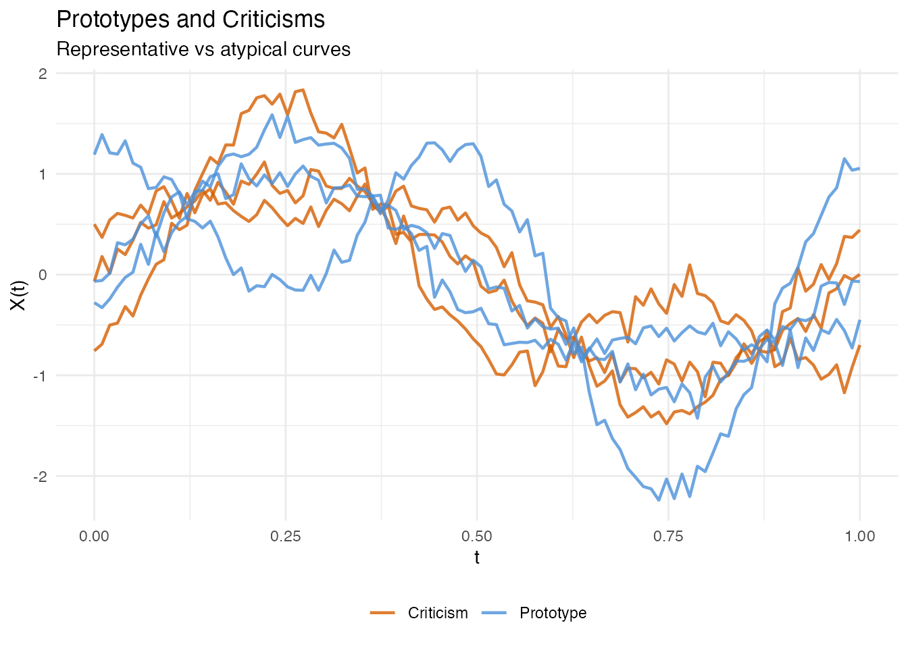
Classification Explainability
All the methods above also work with
functional.logistic() models via automatic dispatch — you
call the same R function and it detects the model class. In addition,
two methods are logistic-only: calibration and ECE.
| Method | lm | logistic | Notes |
|---|---|---|---|
| PDP, ALE, Sobol, … | yes | yes | On probability scale for logistic |
| Calibration | yes | Hosmer-Lemeshow test | |
| ECE / MCE | yes | Binned calibration error |
Logistic Setup
y_binary <- as.numeric(y > median(y))
logit_model <- functional.logistic(fdataobj, y_binary, ncomp = 3)
cat("Accuracy:", round(logit_model$accuracy, 4), "\n")
#> Accuracy: 0.5375PDP and ALE for Classification
For logistic models, PDP and ALE show the effect of FPC scores on the predicted probability of the positive class (rather than a continuous response).
pdp_logit <- fregre.pdp(logit_model, data = fdataobj, component = 1, n.grid = 30)
df_pdp_logit <- data.frame(x = pdp_logit$grid_values, y = pdp_logit$pdp_curve)
ggplot(df_pdp_logit, aes(x = x, y = y)) +
geom_line(color = "#D55E00", linewidth = 1) +
labs(title = "PDP for Logistic Model (PC1)",
subtitle = "Effect of PC1 on predicted probability",
x = "PC1 Score", y = "Predicted Probability")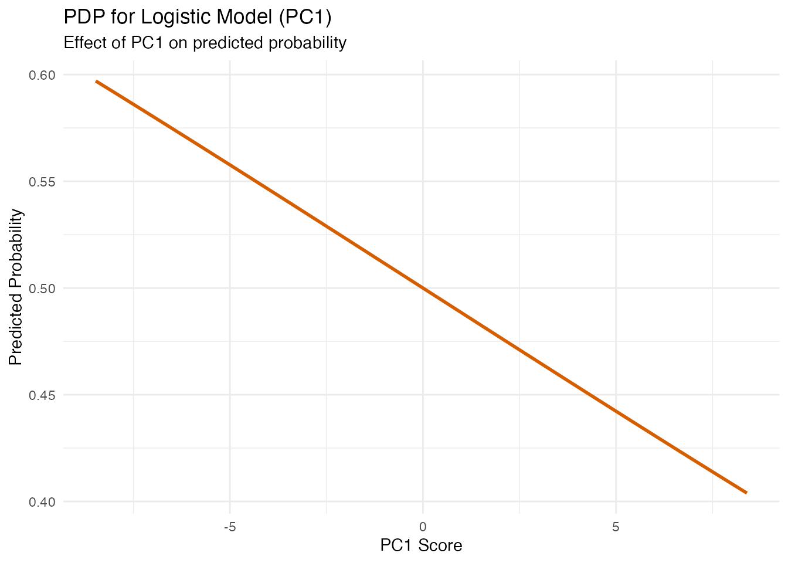
ale_logit <- fregre.ale(logit_model, data = fdataobj, component = 1, n.bins = 15)
df_ale_logit <- data.frame(x = ale_logit$bin_midpoints, y = ale_logit$ale_values)
ggplot(df_ale_logit, aes(x = x, y = y)) +
geom_step(color = "#D55E00", linewidth = 1) +
geom_hline(yintercept = 0, linetype = "dashed", alpha = 0.3) +
labs(title = "ALE for Logistic Model (PC1)",
x = "PC1 Score", y = "ALE")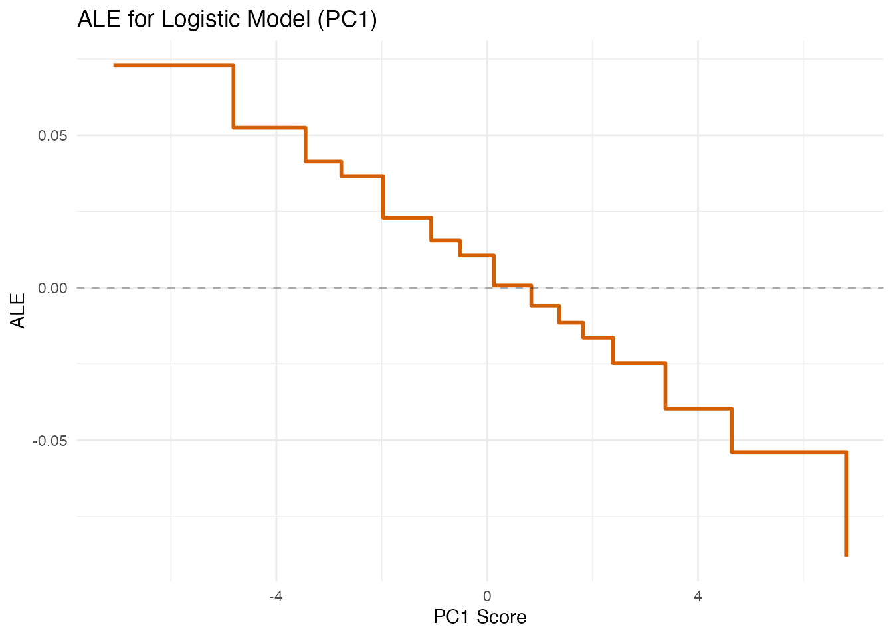
Beta Decomposition (Logistic)
decomp_logit <- fregre.beta.decomp(logit_model)
df_decomp_logit <- data.frame(
Component = paste0("PC", 1:length(decomp_logit$variance_proportion)),
Weight = decomp_logit$variance_proportion
)
df_decomp_logit$Component <- factor(df_decomp_logit$Component,
levels = df_decomp_logit$Component[order(-df_decomp_logit$Weight)])
ggplot(df_decomp_logit, aes(x = Component, y = Weight)) +
geom_col(fill = "#D55E00", alpha = 0.7) +
labs(title = "Beta Decomposition (Logistic)",
subtitle = "Importance of each FPC for the classification boundary",
x = "Component", y = "Variance Proportion")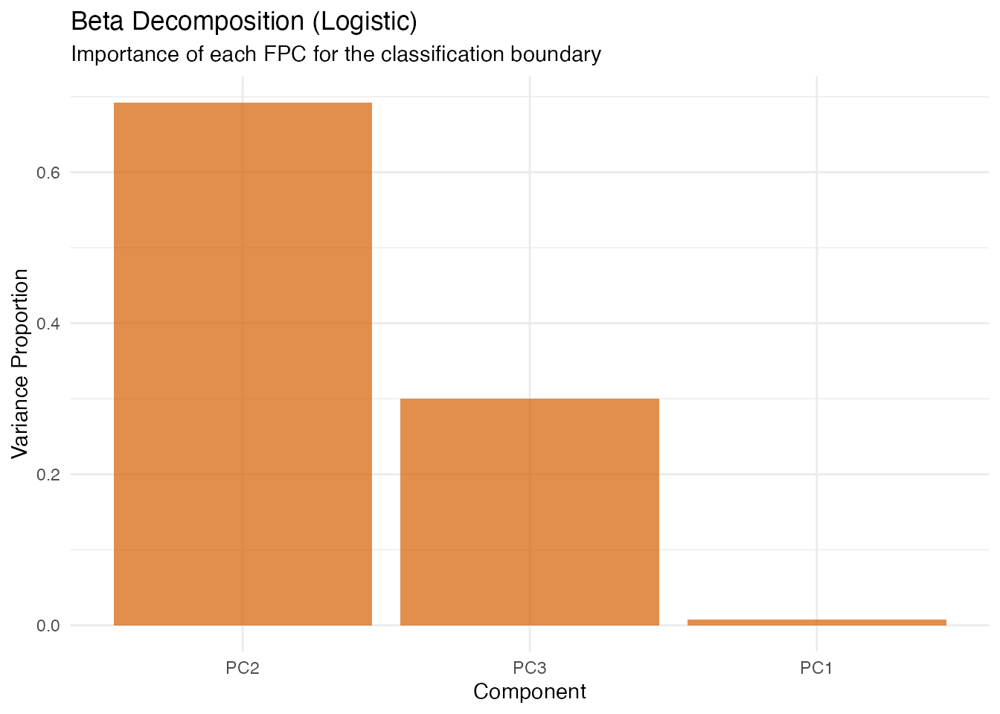
Calibration Diagnostics
In plain English: Calibration checks whether predicted probabilities match observed frequencies. If the model says “70% chance of class 1” for a group of observations, about 70% should actually be class 1. Poor calibration means the model is over- or under-confident.
logistic only. Continuous (fregre.lm)
models do not produce probabilities.
- Brier score: Mean squared error of probability forecasts (lower = better).
- Hosmer-Lemeshow : Goodness-of-fit test for calibration.
- ECE (Expected Calibration Error): Average absolute gap between predicted probability and observed frequency.
- MCE (Maximum Calibration Error): Worst-case gap across bins.
cal <- fregre.calibration(logit_model, y = y_binary, n.groups = 5)
cat("Brier score:", round(cal$brier_score, 4), "\n")
#> Brier score: 0.2474
cat("Hosmer-Lemeshow chi2:", round(cal$hosmer_lemeshow_chi2, 4), "\n")
#> Hosmer-Lemeshow chi2: 3.0347
ece <- fregre.ece(logit_model, y = y_binary, n.bins = 5)
cat("ECE:", round(ece$ece, 4), "\n")
#> ECE: 0.0042
cat("MCE:", round(ece$mce, 4), "\n")
#> MCE: 0.056Perturbation Spaces: Current Approach and Alternatives
All explainability methods in fdars work by perturbing the model inputs and observing how predictions change. The key design choice is: in which space do we define perturbations? For functional data this is nontrivial, because a curve is infinite-dimensional and different representations capture different aspects of its variation.
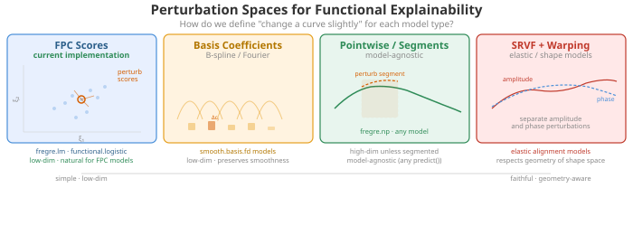
Current implementation: FPC scores
The fdars explainability toolkit operates in FPC score space. All perturbations — PDP grid sweeps, SHAP coalitions, LIME neighbourhood sampling, counterfactual optimisation — modify the -dimensional score vector rather than the curve itself.
Why this works well: For fregre.lm and
functional.logistic, the model is defined in FPC
score space — the prediction function is
.
Perturbing scores is exact: we change the actual model inputs. The
dimensionality is low
(–),
so methods like SHAP (which enumerate subsets) and Sobol (which require
Monte Carlo sampling) are computationally tractable.
Alternative perturbation spaces
For other model types or data structures, FPC scores may not be the most faithful perturbation space:
| Space | Perturb what? | Best for | Pros | Cons |
|---|---|---|---|---|
| FPC scores |
fregre.lm,
functional.logistic
|
Low-dim, exact for FPC-based models | Assumes FPCA captures relevant variation | |
| Basis coefficients | B-spline / Fourier | Basis-represented models | Low-dim, preserves smoothness | Tied to a specific basis choice |
| Pointwise / segments | or region averages | Nonparametric (fregre.np), any model |
Model-agnostic | High-dim unless segmented; may produce unrealistic curves |
| SRVF + warping | Amplitude and phase separately | Elastic alignment models | Respects shape geometry | Complex; requires elastic framework |
| Wavelet coefficients | Multi-resolution | Localized features | Captures local + global structure | Basis-dependent; less common in FDA |
When FPC scores are the wrong space
FPC scores are a linear, global representation. They can be misleading when:
Phase variation dominates. Elastic models exist precisely because FPCA cannot separate timing from amplitude. Perturbing FPC scores of unaligned curves produces unrealistic shapes that mix the two. The natural space for elastic models is SRVF amplitude scores + warping function scores.
Localized features matter. FPCA eigenfunctions are global (nonzero everywhere). If a small bump at is the key predictor, many FPCs are needed to represent it. A B-spline or wavelet perturbation space would be more faithful and lower-dimensional for that feature.
Nonlinear manifold structure. If curves live on a curved manifold (e.g. positive functions, shapes, compositional data), linear FPC perturbations can produce off-manifold curves — negative where they should be positive, wrong topology, etc.
The pragmatic path: FPC projection as a universal adapter
For models that do not internally use FPC scores
(e.g. fregre.np), a practical approach is to use FPCA as a
perturbation coordinate system without modifying the
model:
- Perform FPCA on the training data.
- Project each observation into score space.
- Perturb scores as usual (PDP, SHAP, etc.).
- Reconstruct the perturbed curve from the modified scores.
- Call the model’s
predict()on the reconstructed curve.
This treats FPCA as the perturbation language, not part of the model itself. It works well as a first-order approximation — “which modes of variation matter most?” — but the explanations are in terms of FPC modes, which may not align with the features the nonparametric model actually uses.
The principled alternative is model-specific perturbation spaces: elastic models perturb in (aligned amplitude, warping) space; basis models perturb coefficients; NP models use functional distance-based neighbourhoods. This is a potential direction for future fdars versions.
Practical recipe: Elastic alignment + linear regression
You don’t need native elastic explainability to get explanations for
data with phase variation. The key insight: elastic alignment
separates amplitude from phase. Once curves are aligned, FPCA
captures amplitude variation only, and a standard
fregre.lm() model operates in a clean amplitude score
space.
The pipeline is:
-
Align curves using
alignment.karcher.mean()to obtain aligned curves and warping functions . -
Fit
fregre.lm()on the aligned curves . -
Apply any of the 22 explainability methods — they
all work on the resulting
fregre.lmmodel.
# Step 1: Elastic alignment (removes phase variation)
aligned <- alignment.karcher.mean(fdataobj)
# Step 2: Fit linear model on aligned curves
model_aligned <- fregre.lm(aligned$aligned, y, ncomp = 5)
# Step 3: All explainability methods work!
pdp_aligned <- fregre.pdp(model_aligned, data = aligned$aligned, component = 1)
shap_aligned <- fregre.shap(model_aligned, data = aligned$aligned)
lime_aligned <- fregre.lime(model_aligned, data = aligned$aligned, observation = 1)What this gives you:
| Aspect | Before alignment | After alignment |
|---|---|---|
| FPC scores capture | Amplitude + phase (mixed) | Amplitude only (clean) |
| Explainability of | Mixed variation | Pure shape effects |
| Phase information | Confounded with amplitude | Available separately via |
| Model support | Need elastic.regression
|
Standard fregre.lm (all 22 methods) |
What about phase effects? The warping functions
from alignment capture timing variation. You can analyse them separately
— e.g. via horiz.fpca() to extract phase modes — or include
summary statistics of
(such as warp complexity or mean shift) as scalar covariates in the
regression model.
When this is preferable to native elastic regression:
- You want the full explainability toolkit (22 methods) rather than
the limited
elastic.attribution()(amplitude vs phase decomposition only). - You want model diagnostics (influence, VIF, LOO-CV) for quality control.
- The amplitude component is the primary predictor and phase variation is nuisance — alignment removes it cleanly.
When this is not enough:
- Phase variation is the predictor (e.g. timing of a peak predicts the response). Then elastic regression models the relationship directly in SRVF space, and the align-then-regress pipeline discards the signal.
- Alignment is unreliable (e.g. curves have very different shapes, not just different timing). Forcing alignment can distort the amplitude component.
Summary
The current FPC score approach covers ~90% of use cases — it is the natural coordinate system for FDA, low-dimensional, and exact for the two supported model types. The align-then-regress pipeline extends coverage to elastic data by using alignment as a preprocessing step. For the remaining cases, FPC projection provides a reasonable approximation with documented caveats, while model-specific perturbation spaces would provide more faithful explanations at greater implementation cost.
References
Apley, D.W. and Zhu, J. (2020). Visualizing the effects of predictor variables in black box supervised learning models. JRSS-B, 82(4), 1059–1086.
Friedman, J.H. and Popescu, B.E. (2008). Predictive learning via rule ensembles. Annals of Applied Statistics, 2(3), 916–954.
Goldstein, A., Kapelner, A., Bleich, J. and Pitkin, E. (2015). Peeking inside the black box. JCGS, 24(1), 44–65.
Kim, B., Khanna, R. and Koyejo, O.O. (2016). Examples are not enough, learn to criticize! NeurIPS, 29.
Lundberg, S.M. and Lee, S.-I. (2017). A unified approach to interpreting model predictions. NeurIPS, 30.
Ramsay, J.O. and Silverman, B.W. (2005). Functional Data Analysis. 2nd ed. Springer.
Ribeiro, M.T., Singh, S. and Guestrin, C. (2016). “Why should I trust you?”: Explaining the predictions of any classifier. KDD.
Ribeiro, M.T., Singh, S. and Guestrin, C. (2018). Anchors: High-precision model-agnostic explanations. AAAI.
Sobol, I.M. (1993). Sensitivity estimates for nonlinear mathematical models. Mathematical Modelling and Computational Experiments, 1, 407–414.
See Also
-
vignette("regression-diagnostics")— DFBETAS, permutation importance, stability -
vignette("uncertainty-quantification")— prediction intervals, bootstrap CI -
vignette("articles/scalar-on-function")— scalar-on-function regression methods